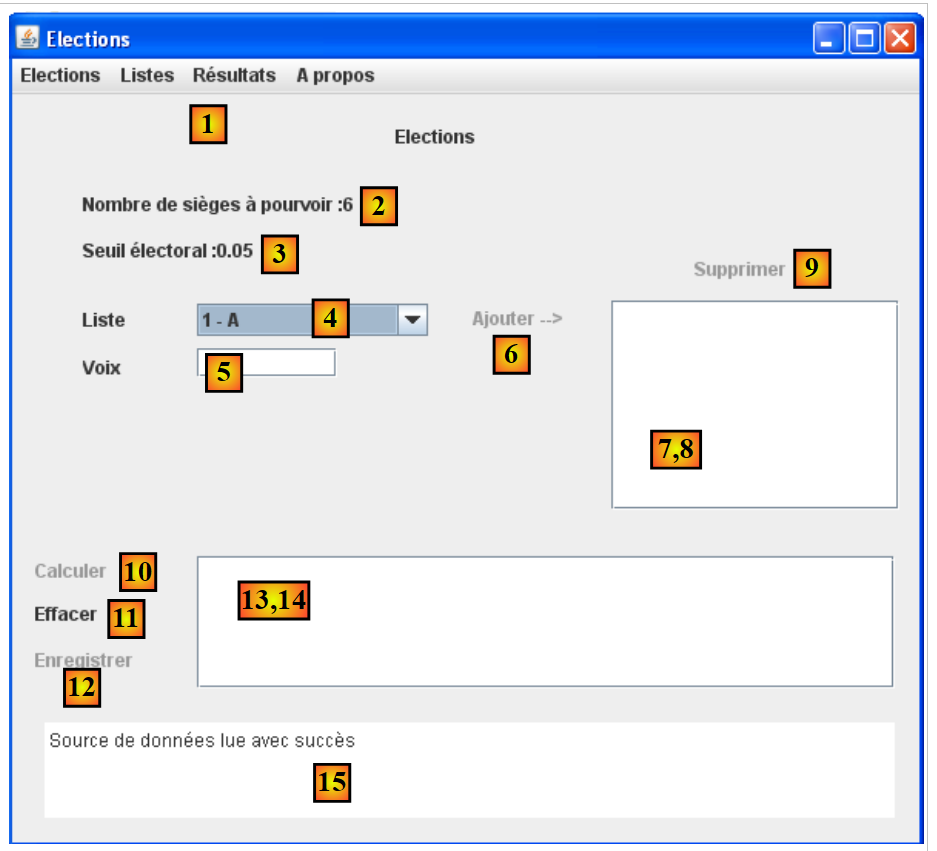
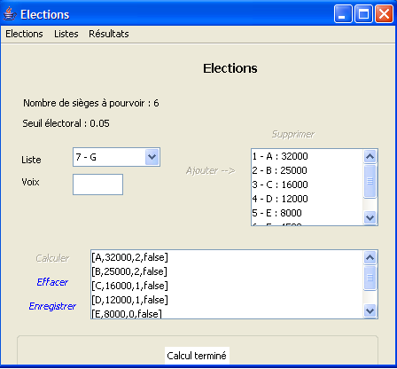
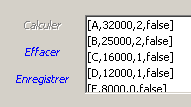
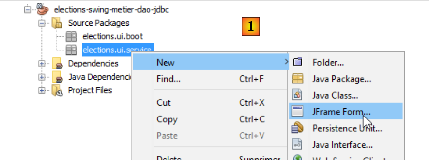
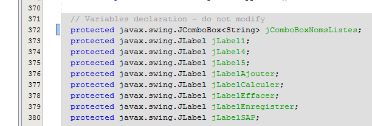
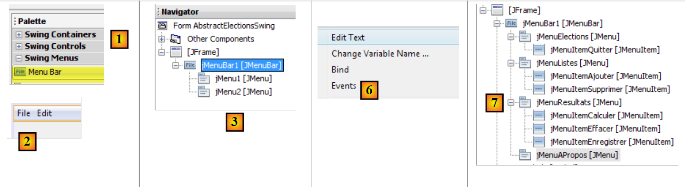
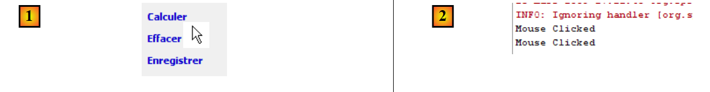
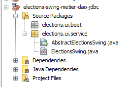
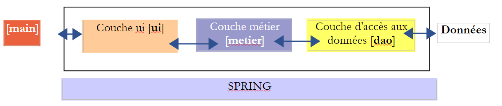
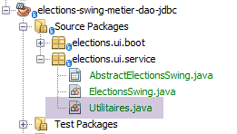

10. [TD]: Implementatie van de laag [ui] met een Swing-interface-
Sleutelwoorden: meerlaagse architectuur, Spring, afhankelijkheidsinjectie, Swing-componentenbibliotheek.
 |
10.1. Support
 |
In de laag [UI] willen we een Swing-gebruikersinterface bouwen. NetBeans beschikt over een tool [Matisse] om deze Swing-interfaces te bouwen, die superieur is aan wat Eclipse te bieden heeft. Swing-interfaces worden steeds vaker vervangen door JavaFx-interfaces. NetBeans en Eclipse gebruiken dezelfde tool om deze laatste te bouwen. Als we dus JavaFx-interfaces bouwen, kunnen we Eclipse van begin tot eind in de gelaagde architectuur behouden.
NetBeans kan elk Maven-project openen. We gaan dus het vorige Maven-project gebruiken en er een Swing-interface aan toevoegen. In [2] laden we (File / Open project) de Maven-projecten van de drie lagen die we met Eclipse hebben gebouwd. Vervolgens bouwen we hun [3]-binaries. De opties [Build] en [Clean and Build] bouwen het binaire bestand van het project waarop ze worden toegepast. Deze binaire bestanden worden in de map [target] [4-5] van het project geplaatst:
 |
De optie [Clean] verwijdert deze map [target]. De optie [Build] herstelt deze map. De ervaring leert dat wanneer er onverwachte problemen optreden, het eerste wat je moet doen een [Clean and Build] op het project uitvoeren is, om er zeker van te zijn dat je met de nieuwste versie ervan werkt. Dit is met name nodig wanneer je configuratiebestanden hebt die, als ze worden gewijzigd, geen automatische hercompilatie veroorzaken bij het uitvoeren van het project. Je moet deze hercompilatie dan forceren met een [Clean and Build], zodat de nieuwe versies in de map [target] worden geïnstalleerd.
10.2. Werking van de applicatie
Laten we terugkeren naar de algemene architectuur van de applicatie [Elections]:
 |
We richten ons nu op een nieuwe implementatie van de laag [ui]. De enige implementatie die tot nu toe is gerealiseerd, is een console-interface. We maken nu een grafische interface.
De gebruiker krijgt de volgende interface ter beschikking om met de applicatie [Elections] te communiceren:
 |
 |
De grafische interface bevindt zich in de laag [ui]. Deze laag communiceert met de gebruiker.
- Bij het opstarten instantiëert de console-applicatie [main] de drie lagen van de applicatie met behulp van Spring. Dit gebeurt nog voordat de grafische interface zichtbaar is. Nog steeds in deze initialisatiefase wordt de informatie over de verkiezing (aantal te vervullen zetels, kiesdrempel, deelnemende lijsten) opgevraagd bij de laag [dao]. Als deze initialisatiefase mislukt (bijvoorbeeld omdat er geen toegang tot de gegevens kan worden verkregen), wordt er een foutmelding weergegeven op de console en wordt de grafische interface niet weergegeven.
- Als het inlezen van de gegevens goed is verlopen, wordt de grafische interface weergegeven met de volgende informatie (zie schermafbeelding hierboven):
- het aantal te vervullen zetels in (2)
- de kiesdrempel in (3)
- de identificatiecodes en namen van de kandidatenlijsten in (4)
- de gebruiker wijst vervolgens aan elke kandidatenlijst het aantal stemmen toe met behulp van de velden 4 (id - naam), 5 (stemmen), 6 (toevoegen).

- Vervolgens kan de link (10) worden gebruikt om de zetels te berekenen:

- Via de link [Enregistrer] (12) kunnen de resultaten in de gegevensbron worden opgeslagen.
10.3. De implementatieklasse [ElectionsSwing] van de laag [ui]
10.3.1. Het NetBeans-project
Opmerking: In paragraaf 22.4 wordt uitgelegd hoe u NetBeans kunt verkrijgen.
Het uiteindelijke NetBeans-project van de applicatie krijgt de volgende vorm: [1]. Bouw het op door de stappen in [2-5] te volgen:
 |
 |
Zorg ervoor dat het project is geconfigureerd om te worden gecompileerd door een JDK 1.8 [1-6]:
 |
10.3.2. Maven-configuratie
Het nieuwe project [elections-swing-metier-dao-jdbc] zal voortbouwen op het vorige project [elections-console-metier-dao-jdbc]. Hiervoor voegen we als volgt een Maven-afhankelijkheid toe: [1-3]:
 |
 |
10.3.3. Het bouwen van de grafische interface
Om de grafische interface te maken, kunnen we als volgt te werk gaan:
 |
 |
- [1]: toevoegen van een object aan het pakket [elections.ui.service]
- [2]: de optie [JFrame Form] selecteren in de categorie [Swing GUI Forms]
 |
- [4]: een naam toekennen aan de klasse
- [5]: het pakket van de klasse.
- Sluit de wizard af.
- [6]: de gegenereerde klasse
 |
- [7]: de klasse [AbstractElectionsSwing] in de modus [Design]
- [8]: het tabblad [Navigator] dat de boomstructuur [9] van de venstercomponenten weergeeft
- [10]: het tabblad [Properties] dat de eigenschappen weergeeft van de in [9] geselecteerde component [jFrame]
 |
- [11]: [JFrame] is een componentcontainer. Deze componenten kunnen volgens verschillende positioneringsregels, genaamd layouts, in de container worden geplaatst. Hier kiezen we voor de layout [Free Design] [14], waarmee componenten vrij in de container kunnen worden geplaatst.
We vinden de componenten in de werkbalk met de naam Palette:
 |
- [1]: het palet
- [2]: een component JLabel wordt in de componentencontainer geplaatst
- door er met de rechtermuisknop op te klikken, krijgt men toegang tot diverse eigenschappen: de naam [4], de tekst [3] of de gebeurtenishandlers [5]. We gebruiken [3] om de tekst [6] vast te leggen.
 |
- [1]: het tabblad [Properties] van de component [JLabel] geeft toegang tot de eigenschappen ervan: de horizontale positionering [2], verticale positie [3], het lettertype van de tekst [4] en de tekst [5].
Wanneer een component op de grafische interface wordt geplaatst en geconfigureerd en het uitgevoerde werk wordt opgeslagen (Ctrl-S), wordt er code gegenereerd in de klasse [AbstractElectionsSwing]:
 |
 |
Deze grijze code mag niet worden gewijzigd, omdat deze bij de volgende opslag wordt verwijderd en opnieuw gegenereerd. Eventuele wijzigingen zouden dan verloren gaan.
Een tutorial voor het maken van een grafische interface met NetBeans is te vinden in URL en [https://netbeans.org/kb/docs/java/quickstart-gui.html?print=yes#design] (november 2015).
We bouwen nu de volgende interface:
 |
De componenten van de interface zijn als volgt:
nr. | type | naam | rol |
JMenuBar | jMenuBar1 | een menu | |
JLabel | jLabelSAP | het aantal te vervullen zetels | |
JLabel | jLabelSE | de kiesdrempel | |
JComboBox | jComboBoxNomsListes | lijst met namen van de deelnemende lijsten | |
JTextField | jTextFieldVoixListe | het aantal stemmen voor een lijst | |
JLabel | jLabelAjouter | om een lijst toe te voegen aan (8) | |
(JScrollPane, JList) | jListNomsVoix | de namen en stemmen van de lijsten | |
JLabel | jLabelSupprimer | om de in (8) geselecteerde lijst uit (8) te verwijderen | |
JLabel | jLabelCalculer | om de verkiezingsuitslagen te berekenen | |
JLabel | jLabelEffacer | om de verkiezingsuitslagen te wissen | |
JLabel | jLabelEnregistrer | om de verkiezingsuitslag op te slaan | |
(JScrollPane, JList) | jListResultats | om de verkiezingsuitslagen weer te geven | |
(JScrollPane, JTextPane) | jTextPaneMessages | om follow-upberichten weer te geven |
De annotatie (JScrollPane, JList) [13-14] is bedoeld om aan te geven dat wanneer een component [JList] in het venster wordt neergezet, deze automatisch wordt ingevoegd in een component [JScrollPane] waarmee door de lijst kan worden gebladerd. Het is de component [JScrollPane] die ervoor zorgt dat alle elementen van de lijst zichtbaar zijn, terwijl er op een bepaald moment slechts een beperkt aantal daarvan zichtbaar is. Hetzelfde geldt voor de componenten [JTextPane] en [15-16].
Het menu kan als volgt worden aangemaakt:
 |
- [1, 2]: een component [Menu Bar] wordt in het venster geplaatst
- [3]: het standaard gegenereerde menu zoals weergegeven in het tabblad [Navigator]
- [4,5,6]: door met de rechtermuisknop op een menuoptie te klikken, kunt u:
- de tekst wijzigen ([4]), de naam wijzigen ([5])
- de bijbehorende gebeurtenissen beheren [6]
- [7]: het gewenste menu
Het gewenste menu is als volgt:
niveau 1 | niveau 2 |
Verkiezingen | |
Quitter | |
Lijsten | |
Ajouter | |
Supprimer | |
Uitslagen | |
Calculer | |
Effacer | |
Enregistrer | |
Over |
Je kunt de grafische interface op elk moment testen:
 |
Bij het bouwen van de interface moet aan bepaalde labels en menu's een gebeurtenishandler worden gekoppeld: [Ajouter, Effacer, ...]. Dit gaat als volgt:
 |
- [1]: klik met de rechtermuisknop op het onderdeel waarvan je een gebeurtenis wilt beheren
- [2]: kies de optie [Events]
- [3]: kies een categorie gebeurtenissen
- [4]: kies de gebeurtenis die u wilt beheren
De Java-code die door deze bewerking wordt gegenereerd, is als volgt:
jLabelCalculer.addMouseListener(new java.awt.event.MouseAdapter() {
public void mouseClicked(java.awt.event.MouseEvent evt) {
jLabelCalculerMouseClicked(evt);
}
});
...
private void jLabelCalculerMouseClicked(java.awt.event.MouseEvent evt) {
// TODO voeg hier uw verwerkingscode toe:
}
- regels 1-5: er wordt een gebeurtenishandler toegevoegd aan de component jLabelCalculer. De methode addMouseListener verwacht als parameter een klasse die de volgende interface MouseListener implementeert:
 |
De interface MouseListener wordt geïmplementeerd door verschillende klassen, waaronder de klasse MouseAdapter. Deze klasse implementeert de vijf methoden van de interface MouseListener, maar deze methoden voeren geen actie uit. Daarom moet deze klasse worden afgeleid om de gewenste methode(s) te implementeren. Dit gebeurt in de bovenstaande code en wordt hieronder weergegeven:
jLabelCalculer.addMouseListener(new java.awt.event.MouseAdapter() {
public void mouseClicked(java.awt.event.MouseEvent evt) {
jLabelCalculerMouseClicked(evt);
}
});
De bovenstaande code maakt gebruik van de techniek van de anonieme klasse die wordt beschreven in paragraaf 2.5 van de cursus [ref1].
Regel 1: de parameter van de methode addMouseListener is een anonieme klasse, die direct tijdens de uitvoering wordt gedefinieerd. Het is een instantie van een klasse die is afgeleid van de klasse MouseAdapter (regel 1), waarvan de methode mouseClicked (regels 2-4) opnieuw wordt gedefinieerd zodat deze iets uitvoert.
De methode jLabelCalculerMouseClicked, ook wel regel 3 genoemd, is als volgt gedefinieerd:
private void jLabelCalculerMouseClicked(java.awt.event.MouseEvent evt) {
// TODO voeg hier uw verwerkingscode toe:
}
De ontwikkelaar verwerkt de gebeurtenis "MouseClicked" door code in deze methode te plaatsen.
Alle gebeurtenishandlers worden op deze manier door NetBeans gegenereerd. De ontwikkelaar kan de door NetBeans gegenereerde coderegels negeren om een methode aan een gebeurtenis van een component te koppelen. Hij kan volstaan met het plaatsen van zijn code in regel 2 hierboven. Hier volgt een voorbeeld:
private void jLabelCalculerMouseClicked(java.awt.event.MouseEvent evt) {
System.out.println("Mouse Clicked");
}
Als we de grafische interface uitvoeren en op de link [Calculer] klikken, verschijnt er een bericht op de console:
 |
- [1]: we klikken twee keer op het label [Calculer]
- [2]: de handler voor deze gebeurtenis is uitgevoerd en heeft de berichten mouseClicked in de NetBeans-console gegenereerd.
De componenten [jComboBoxNomsListes, jListNomsVoix, jListResultats] worden als volgt gedeclareerd:
protected javax.swing.JComboBox jComboBoxNomsListes;
protected javax.swing.JList jListNomsVoix;
protected javax.swing.JList jListResultats;
Deze componenten zijn lijsten die normaal gesproken worden geconfigureerd met een type T: het type van de elementen van het model dat door de componenten wordt weergegeven. Dit type T kan willekeurig zijn. De waarde die in de lijstcomponent wordt weergegeven, is van het type [String]. Standaard wordt dan de methode [T.toString()] gebruikt voor de weergave. Om beter te kunnen bepalen wat er wordt weergegeven, is het type T hier het type String. De juiste declaratie van onze lijsten is dan ook als volgt:
protected javax.swing.JComboBox<String> jComboBoxNomsListes;
protected javax.swing.JList<String> jListNomsVoix;
protected javax.swing.JList<String> jListResultats;
Dit resultaat verkrijgen we door een van de eigenschappen van de component te wijzigen:
 |
10.3.4. Scheiding van de code
Laten we terugkeren naar de structuur van onze applicatie:
 |
De klasse [AbstractElectionsSwing] moet de bovenstaande laag [ui] implementeren. De door NetBeans gegenereerde code bevat momenteel alleen code voor het beheer van het venster en gebeurtenishandlers die voorlopig nog niets doen. Hierboven zien we dat de klasse [AbstractElectionsSwing] de communicatie met de laag [métier] moet afhandelen. Dit gebeurt in de gebeurtenishandlers. Om de structuur van de code te verduidelijken, besluiten we deze in twee klassen onder te brengen:
- [AbstractElectionsSwing], die op enkele details na blijft zoals deze door NetBeans is gegenereerd. Deze klasse zal zelf geen gebeurtenissen afhandelen. De gebeurtenishandlers zullen leeg zijn en als abstract worden gedeclareerd. Ze zullen worden geïmplementeerd door een klasse die is afgeleid van [AbstractElectionsSwing].
- [ElectionsSwing], een klasse die is afgeleid van [AbstractElectionsSwing] en die alle gebeurtenishandlers zal implementeren.
Dit soort scheiding is niet ongebruikelijk. Het komt bijvoorbeeld voor in de webpagina’s van ASP.NET (niet-MVC-versie). Het NetBeans-project ontwikkelt zich als volgt:
 |
De code van de klasse [AbstractElectionsSwing] ontwikkelt zich als volgt:
public abstract class AbstractElectionsSwing {
....
private void jMenuItemCalculerActionPerformed(java.awt.event.ActionEvent evt) {
doCalculer();
}
...
private void jLabelCalculerMouseClicked(java.awt.event.MouseEvent evt) {
if (jLabelCalculer.isEnabled()) {
doCalculer();
}
}
....
// gebeurtenishandlers
abstract protected void doSupprimer();
abstract protected void doCalculer();
abstract protected void doQuitter();
abstract protected void doEffacer();
abstract protected void doEnregistrer();
abstract protected void doAjouter();
abstract protected void doInformer();
abstract protected void doMajLabelAjouter();
abstract protected void doMajLabelSupprimer();
...
}
- regel 1: de klasse wordt als abstract gedeclareerd
- regels 3-5: afhandeling van de klik op de menuoptie [jMenuItemCalculer]. We zien dat de afhandeling van de gebeurtenis wordt doorgeschakeld naar de methode doCalculer op regel 19. Deze methode is niet geïmplementeerd en is als abstract gedeclareerd. Het is de afgeleide klasse [ElectionsSwing] die deze zal implementeren;
- regels 9-13: de gebeurtenishandler clic voor het label [jLabelCalculer]. Een klik veroorzaakt altijd een gebeurtenis, ongeacht of de component [jLabel] actief (enabled=true) of inactief (enabled=false) is. Hier wordt gecontroleerd of deze inderdaad actief is om de gebeurtenis te verwerken;
- regels 15 en verder: deze techniek waarbij de afhandeling van gebeurtenissen wordt gedelegeerd aan een abstracte methode, wordt toegepast op alle gebeurtenishandlers.
De klasse [ElectionsSwing], afgeleid van [AbstractElectionsSwing], implementeert alle gebeurtenishandlers die niet door [AbstractElectionsSwing] zijn geïmplementeerd:
package elections.ui.service;;
...
public class ElectionsSwing extends AbstractElectionsSwing {
// gebeurtenishandlers
@Override
protected void doInformer() {
...
}
@Override
protected void doAjouter() {
...
}
@Override
protected void doCalculer() {
...
}
@Override
protected void doEffacer() {
...
}
@Override
protected void doEnregistrer() {
...
}
@Override
protected void doQuitter() {
System.exit(0);
}
@Override
protected void doSupprimer() {
...
}
@Override
protected void doMajLabelAjouter() {
...
}
@Override
protected void doMajLabelSupprimer() {
...
}
}
- regel 3: [ElectionsSwing] is afgeleid van [AbstractElectionsSwing]
- regels 7-50: de gebeurtenishandlers van het grafische venster
De methoden van de afgeleide klasse [ElectionsSwing] zullen de componenten van de bovenliggende klasse [AbstractElectionsSwing] bewerken. Momenteel hebben deze componenten een bereik van private, waardoor de afgeleide klasse [ElectionsSwing] er geen toegang toe heeft:
private JMenuItem jMenuItemAPropos = null;
private JLabel jLabelAjouter = null;
Om dit probleem op te lossen, zorgen we ervoor dat het bereik van de componenten van de grafische interface [protected] wordt:
 |
- het attribuut [protected] instellen op [3];
10.3.5. Implementatie van de interface [IElectionsUI]
Laten we terugkeren naar de structuur van onze applicatie:
 |
Hierboven moet de laag [ui] de interface [IElectionsUI] presenteren aan het object [main]:
package elections.ui.service;
public interface IElectionsUI {
/**
* lance le dialogue avec l'utilisateur
*/
public void run();
}
Deze interface is gedefinieerd in het project [elections-console-metier-dao-jdbc] en beschreven in paragraaf 9.4. Aangezien dit project een afhankelijkheid is van het project [swing], is deze interface bekend.
Omdat de klasse [AbstractElectionsSwing] abstract is geworden, kan deze niet langer door Spring worden geïnstantieerd. Dit moet voortaan gebeuren met de klasse [ElectionsSwing]. De klasse [ElectionsSwing] moet de interface [IElectionsUI] implementeren. De code ervan verandert dus als volgt:
public class ElectionsSwing extends AbstractElectionsSwing implements IElectionsUI {
// run-methode van de interface [ElectionsUI]
public void run() {
...
}
- regel 1: de klasse [ElectionsSwing] implementeert de interface [IElectionsUI]
- regels 4-6: de methode [run] van deze interface
Wat moet de methode run doen? Het grafische venster weergeven. Hoe doen we dat? We kunnen ons laten leiden door de methode [main] die NetBeans heeft gegenereerd in de klasse [AbstractElectionsSwing] en die doet wat we willen:
public static void main(String args[]) {
/* De Nimbus-look-and-feel instellen */
//<editor-fold defaultstate="collapsed" desc=" Code voor het instellen van de look-and-feel (optioneel) ">
/* Als Nimbus (geïntroduceerd in Java SE 6) niet beschikbaar is, blijf dan bij de standaard look-and-feel.
* For details see http://download.oracle.com/javase/tutorial/uiswing/lookandfeel/plaf.html
*/
try {
for (javax.swing.UIManager.LookAndFeelInfo info : javax.swing.UIManager.getInstalledLookAndFeels()) {
if ("Nimbus".equals(info.getName())) {
javax.swing.UIManager.setLookAndFeel(info.getClassName());
break;
}
}
} catch (ClassNotFoundException ex) {
java.util.logging.Logger.getLogger(NewJFrame.class.getName()).log(java.util.logging.Level.SEVERE, null, ex);
} catch (InstantiationException ex) {
java.util.logging.Logger.getLogger(NewJFrame.class.getName()).log(java.util.logging.Level.SEVERE, null, ex);
} catch (IllegalAccessException ex) {
java.util.logging.Logger.getLogger(NewJFrame.class.getName()).log(java.util.logging.Level.SEVERE, null, ex);
} catch (javax.swing.UnsupportedLookAndFeelException ex) {
java.util.logging.Logger.getLogger(NewJFrame.class.getName()).log(java.util.logging.Level.SEVERE, null, ex);
}
//</editor-fold>
/* Het formulier maken en weergeven */
java.awt.EventQueue.invokeLater(new Runnable() {
public void run() {
new NewJFrame().setVisible(true);
}
});
}
De constructor [AbstractElectionsSwing] die in regel 28 wordt gebruikt, is als volgt:
public AbstractElectionsSwing() {
initComponents();
}
- regel 2: de methode [initComponents] is een privé-methode die door de GUI-generator is gegenereerd. De code ervan kan niet worden gewijzigd.
De methode [run] van de klasse [ElectionsSwing] zou dan als volgt kunnen zijn:
@Override
public void run() {
// de grafische interface wordt weergegeven
SwingUtilities.invokeLater(new Runnable() {
public void run() {
init();
setVisible(true);
}
});
}
- regel 6: de grafische interface wordt geïnitialiseerd met behulp van de methode [init]. Hier zouden we de methode [initComponents] van de bovenliggende klasse willen aanroepen, maar deze is privé. Daarom voegen we in de bovenliggende klasse [AbstractElectionsSwing] de volgende methode [init] toe:
protected void init(){
initComponents();
}
- (vervolg)
- omdat de methode [init] zich in de klasse [AbstractElectionsSwing] bevindt, heeft deze toegang tot de privé-methode [initComponents] van dezelfde klasse;
- omdat deze het attribuut [protected] heeft, is deze zichtbaar in de onderliggende klasse [ElectionsSwing];
- regel 7: de grafische interface wordt zichtbaar gemaakt;
Opmerking: wanneer de methode [run] in de klasse [ElectionsSwing] is geschreven, kan de methode [main] van de abstracte klasse [AbstractElectionsSwing] worden verwijderd.
10.3.6. De uitvoerbare klasse
Laten we terugkeren naar de structuur van onze applicatie:
 |
We willen dat Spring de laag [ui] instantiëert, net zoals dat gebeurde toen deze werd geïmplementeerd door een applicatie console. Hiervoor moet de implementatieklasse [ElectionsSwing] een verwijzing bevatten naar de laag [métier]:
@Component
public class ElectionsSwing extends AbstractElectionsSwing implements IElectionsUI{
// referentie op de laag [métier]
@Autowired
private IElectionsMetier metier;
...
- regel 1: de klasse [ElectionsSwing] is een Spring-component;
- regels 5-6: injectie door Spring van een verwijzing naar de laag [métier];
De grafische interface wordt gestart door de volgende klasse [BootElectionsSwing] uit te voeren:
 |
package elections.ui.boot;
import elections.ui.service.IElectionsUI;
public class BootElectionsSwing extends AbstractBootElections {
public static void main(String[] arguments) {
new BootElectionsSwing().run();
}
@Override
protected IElectionsUI getUI() {
return ctx.getBean("electionsSwing", IElectionsUI.class);
}
}
We hebben soortgelijke code uitgelegd in paragraaf 9.5, toen we de code van de klassen [AbstractBootElections] en [BootElectionsConsole] bespraken. Op regel 12 halen we de bean met de naam [electionsSwing] op, die overeenkomt met de standaard Spring-naam voor de klasse [ElectionsSwing].
10.3.7. Initialisatie van de grafische interface
Wanneer de grafische interface wordt weergegeven, zijn sommige componenten ervan geïnitialiseerd:

Hierboven zien we:
- dat de keuzelijst is gevuld met de namen van de lijsten;
- dat het aantal te vervullen zetels en de kiesdrempel zijn aangegeven;
- dat bepaalde links zijn uitgeschakeld;
- dat er onderaan het venster een succesmelding wordt weergegeven;
Wanneer vinden deze initialisaties plaats? Ze kunnen pas plaatsvinden na initialisatie van het veld [electionsMetier] van de klasse [ElectionsSwing]. De namen van de lijsten worden namelijk opgevraagd bij de laag [metier]. De initialisatie van dit veld wordt door Spring in de volgende volgorde uitgevoerd:
- gebruik van de constructor zonder parameters van de klasse [ElectionsSwing];
- injectie van de afhankelijkheden, in dit geval de referentie van de laag [métier];
- uitvoering van de methode [run] van de klasse [ElectionsSwing]:
@Override
public void run() {
// de grafische interface wordt weergegeven
SwingUtilities.invokeLater(new Runnable() {
public void run() {
init();
setVisible(true);
}
});
}
- regel 12: we hebben aangegeven dat de methode [init] van de bovenliggende klasse wordt aangeroepen, die de componenten van de grafische interface zal tekenen. We gaan deze methode lokaal herdefiniëren in de klasse [ElectionsSwing]. In deze methode zullen we de componenten van het venster (combo, labels) initialiseren, ditmaal met gegevens:
De lokale methode [init] zou de volgende opbouw kunnen hebben:
public class ElectionsSwing extends AbstractElectionsSwing implements IElectionsUI {
...
// referentie naar de laag [métier]
@Autowired
private IElectionsMetier metier;
// initialisaties
public void init() {
// genereren van componenten door de bovenliggende klasse
super.init();
// de lijsten worden opgevraagd bij de laag [metier]
...
// de namen van de lijsten worden gekoppeld aan de keuzelijst jComboBoxNomsListes
...
// en de parameters van de verkiezing
...
// de labels die aan deze twee gegevens zijn gekoppeld, worden geïnitialiseerd
...
// succesbericht
...
// initialisatie van de status van bepaalde formuliercomponenten
...
}
Let vooral op de aanroep van de methode [init] uit de bovenliggende klasse op regel 11.
10.3.8. De klasse [Utilitaires]
Een aantal statische hulpprogramma's is gebundeld in de klasse [Utilitaires]:
 |
De klasse [Utilitaires] ziet er als volgt uit:
package istia.st.elections.ui;
import javax.swing.JLabel;
import javax.swing.JMenuItem;
//hulpprogramma-klasse
class Utilitaires {
// de status van een array met labels beheren
public static void setEnabled(JLabel[] labels, boolean value) {
for (int i = 0; i < labels.length; i++) {
labels[i].setEnabled(value);
}
}
// de status van een array met menuopties beheren
public static void setEnabled(JMenuItem[] menuItems, boolean value) {
...
}
}
- regel 9: de methode setEnabled stelt de status in van JLabel-componenten die in een array zijn gedefinieerd. Met de methode setEnabled van een component JLabel kan de JLabel worden in- of uitgeschakeld.
Te doen: schrijf, aan de hand van het voorbeeld van de methode setEnabled op regel 9 (,), de methode setEnabled op regel 16, die hetzelfde doet met componenten JMenuItem.
10.3.9. De code van de klasse [ElectionsSwing]
Laten we de algemene structuur van de klasse [ElectionsSwing] nog eens bekijken:
package istia.st.elections.ui;
...
public class ElectionsSwing extends AbstractElectionsSwing implements IElectionsUI {
// referentie op de laag [métier]
@Autowired
private IElectionsMetier metier;
// initialisaties
public void init() {
...
}
// gebeurtenishandlers
@Override
protected void doInformer() {
...
}
@Override
protected void doAjouter() {
...
}
@Override
protected void doCalculer() {
...
}
@Override
protected void doEffacer() {
...
}
@Override
protected void doEnregistrer() {
...
}
@Override
protected void doQuitter() {
System.exit(0);
}
@Override
protected void doSupprimer() {
...
}
@Override
protected void doMajLabelAjouter() {
...
}
@Override
protected void doMajLabelSupprimer() {
...
}
}
We gaan de methoden van de klasse een voor een bekijken.
10.3.9.1. De methode [init]
Laten we teruggaan naar de grafische interface:
 |
De methode [init] heeft als doel:
- de combo [4] in te vullen met de ID’s en namen van de lijsten in de vorm [id - nom]
- een succesbericht weergeven in [15]
- de labels [2] en [3] te initialiseren
- bepaalde links uit te schakelen
Het raamwerk van de methode [init] zou er als volgt uit kunnen zien:
@Override
protected void init() {
// genereren van componenten door de bovenliggende klasse
super.init();
// lokale initialisaties
modèleNomsVoix = new DefaultListModel<>();
jListNomsVoix.setModel(modèleNomsVoix);
modèleRésultats = new DefaultListModel<>();
jListResultats.setModel(modèleRésultats);
String info;
try {
// de lijsten worden opgevraagd bij de laag [métier]
listes = ...
// de namen van de lijsten worden gekoppeld aan de keuzelijst jComboBoxNomsListes
...
// evenals de verkiezingsparameters
int nbSiegesAPourvoir = ...
double seuilElectoral = ...
// de labels die aan deze twee gegevens zijn gekoppeld, worden geïnitialiseerd
...
// succesbericht
info = "Source de données lue avec succès";
} catch (ElectionsException ex1) {
// er wordt een foutmelding weergegeven
info = getInfoForException("Les erreurs suivantes se sont produites :", ex1);
} catch (RuntimeException ex2) {
// de fout wordt genoteerd
info = getInfoForException("Les erreurs suivantes se sont produites :", ex2);
}
// de informatie wordt weergegeven
jTextPaneMessages.setText(info);
jTextPaneMessages.setCaretPosition(0);
// formulierstatus
Utilitaires.setEnabled(new JLabel[] { jLabelAjouter, jLabelCalculer, jLabelEnregistrer, jLabelSupprimer }, false);
Utilitaires.setEnabled(
new JMenuItem[] { jMenuItemAjouter, jMenuItemCalculer, jMenuItemEnregistrer, jMenuItemSupprimer }, false);
// venster centreren
Dimension screenSize = Toolkit.getDefaultToolkit().getScreenSize();
Dimension frameSize = getSize();
if (frameSize.height > screenSize.height) {
frameSize.height = screenSize.height;
}
if (frameSize.width > screenSize.width) {
frameSize.width = screenSize.width;
}
setLocation((screenSize.width - frameSize.width) / 2, (screenSize.height - frameSize.height) / 2);
}
private String getInfoForException(String message, ElectionsException ex) {
// het bericht weergeven
StringBuffer info = new StringBuffer(String.format("%s -------------\n", message));
info.append(String.format("Code erreur : %d\n", ex.getCode()));
// fouten weergeven
for (String erreur : ex.getErreurs()) {
info.append(String.format("-- %s\n", erreur));
}
return info.toString();
}
private String getInfoForException(String message, RuntimeException ex) {
// het bericht weergeven
StringBuffer info = new StringBuffer(String.format("%s -------------\n", message));
// de uitzonderingsstack weergeven
Throwable cause = ex;
while (cause != null) {
info.append(String.format("-- %s\n", cause.getMessage()));
cause = cause.getCause();
}
return info.toString();
}
Opdracht: vul de code van de methode [init] aan.
Te lezen in de cursus: componenten JTextField, JLabel
Goed om te weten:
Een component JList geeft de gegevens weer die in een sjabloon staan. Standaard is dit sjabloon van het type DefaultListModel (regels 2 en 3). Een object van het type DefaultListModel gedraagt zich enigszins als een object van het type ArrayList:
- om een object van het type o aan het sjabloon toe te voegen:
[DefaultListModel].addElement(Object o);
In deze toepassing zal het object o altijd van het type String zijn.
- om element nr. i uit het sjabloon te verwijderen:
[DefaultListModel].remove(int i);
- Om element nr. i uit het sjabloon op te halen:
[DefaultListModel].elementAt(int i);
Om een element toe te voegen aan de combo [jComboBoxNomsListes], gebruiken we de methode [addItem]:
jComboBoxNomsListes.addItem(chaîne de caractères)
Een component JTextPane beschikt over de methoden getText() en setText() om de weergegeven tekst te lezen/schrijven.
10.3.9.2. De status van de koppeling [Ajouter] beheren
De koppeling [Ajouter] [6] is alleen actief wanneer het veld [5] van de stemmen niet leeg is. In de klasse [AbstractElectionsSwing] is de handler die de bewegingen van de cursor in het veld [5] volgt, als volgt:
private void jTextFieldVoixListeCaretUpdate(javax.swing.event.CaretEvent evt) {
doMajLabelAjouter()
}
Regel 2 roept de methode [doMajLabelAjouter] van de klasse [ElectionsSwing] aan.
protected void doMajLabelAjouter() {
// de status van het label wordt ingesteld [jLabelAjouter]
...
// de status van het menu wordt vastgelegd [jMenuItemAjouter]
...
}
Opdracht: vul de code van de methode [doMajLabelAjouter] aan.
10.3.9.3. De stemmen toewijzen aan elke lijst
Voor elke kandidaatlijst uit (4) gaat men als volgt te werk:
- een lijst kiezen uit (4)
- het aantal stemmen invoeren in (5)
- bevestigen door op de link [Ajouter] te klikken
Invoerfouten worden gemeld zoals in het volgende voorbeeld te zien is:

Als het aantal stemmen correct is, wordt de lijst toegevoegd aan het onderdeel (8), wordt het aantal stemmen gewist en wordt de link [Ajouter] uitgeschakeld:
 |  |
In de klasse [AbstractElectionsSwing] is de handler die de klik op de link [Ajouter] afhandelt als volgt:
private void jLabelAjouterMouseClicked(java.awt.event.MouseEvent evt) {
if (jLabelAjouter.isEnabled()) {
doAjouter();
}
}
Regel 3 roept de methode [doAjouter] van de klasse [ElectionsSwing] aan:
// sjablonen voor de lijsten JList
private DefaultListModel<String> modèleNomsVoix = null;
private DefaultListModel<String> modèleRésultats = null;
// de lijsten in de competitie
private ListeElectorale[] listes;
// door de gebruiker ingevoerde lijsten
private final List<ListeElectorale> listesSaisies = new ArrayList<>();
private ListeElectorale[] tListesSaisies;
...
@Override
protected void doAjouter() {
// is het aantal stemmen correct?
...
// als er een fout is, wordt deze gemeld
if (erreur) {
JOptionPane.showMessageDialog(null, "Nombre de voix incorrect", "Elections : erreur",
JOptionPane.INFORMATION_MESSAGE);
jTextFieldVoixListe.requestFocus();
// terug naar de grafische interface
return;
}
// geen fout – de lijst wordt opgeslagen
listesSaisies.add(...);
modèleNomsVoix.addElement(...);
// het aantal stemmen wordt opgeschoond
jTextFieldVoixListe.setText("");
// formulierstatus (menu's, labels)
...
}
- regel 25: telkens wanneer de gebruiker stemmen aan een lijst toevoegt en zijn keuze bevestigt, wordt deze lijst in het veld [listesSaisies] van regel 9 geplaatst. Daar wordt de lijst opgeslagen met de informatie uit [id, version, nom, voix]. De eerste drie gegevens zijn afkomstig uit de lijsten die aanvankelijk in de tabel van regel 6 zijn opgeslagen. Met de methode [getSelectedIndex] van de keuzelijst kan de index van de geselecteerde lijst worden bepaald;
Te doen: vul de code van de methode [doAjouter] aan.
10.3.9.4. De status van de koppeling [Supprimer] beheren
De koppeling [Supprimer] [9] is alleen actief wanneer een item is geselecteerd in [8].
In de klasse [AbstractElectionsSwing] is de handler die reageert op een klik op een element in de lijst [8] de volgende:
private void jListNomsVoixValueChanged(javax.swing.event.ListSelectionEvent evt) {
doMajLabelSupprimer();
}
Regel 2 roept de methode [doMajLabelSupprimer] van de klasse [ElectionsSwing] aan.
@Override
protected void doMajLabelSupprimer() {
// het label [jLabelSupprimer] en de bijbehorende menuoptie worden ingeschakeld
...
}
Opdracht: vul de code van de methode [doMajLabelSupprimer] aan.
10.3.9.5. Een kandidatenlijst verwijderen
Via de koppeling [Supprimer] [9] kan het in (8) geselecteerde paar (naam, stem) worden verwijderd. Zodra de verwijdering is voltooid, wordt de koppeling [Supprimer] uitgeschakeld. Deze wordt pas weer ingeschakeld wanneer er in (8) een nieuwe lijst wordt geselecteerd.
 |  |
In de klasse [AbstractElectionsSwing] is de handler die reageert op een klik op de link [Supprimer] de volgende:
private void jLabelSupprimerMouseClicked(java.awt.event.MouseEvent evt) {
if(jLabelSupprimer.isEnabled()){
doSupprimer();
}
}
Lijn 3 roept de methode [doSupprimer] van de klasse [ElectionsSwing] aan.
@Override
protected void doSupprimer() {
// verwijdering van de geselecteerde lijst, het sjabloon modèleNomsVoix en de ingevoerde lijsten
...
// bijwerken van de status van de labels en menuopties van het formulier
Utilitaires.setEnabled(...);
...
}
Te doen: vul de code van de methode [doSupprimer] aan.
10.3.9.6. De status van de koppeling [Calculer] beheren
De koppeling [Calculer] [10] is alleen actief als er ten minste één element in [8] aanwezig is.
Te doen: voeg de benodigde code toe voor het beheer van deze koppeling in de eerder geschreven methoden [doAjouter] en [doSupprimer]. De bijbehorende menuoptie wordt ook beheerd.
Let op: het aantal elementen van een element van het type DefaultListModel wordt verkregen met de methode size().
10.3.9.7. Zetels berekenen
Via de koppeling [Calculer] [10] kan de berekening van de zetels worden gestart en worden de resultaten weergegeven in (14). Als de berekening mislukt (alle lijsten zijn uitgesloten), wordt er een foutmelding weergegeven in [15]. In alle gevallen wordt na de berekening de link [Calculer] [10] gedeactiveerd.
In de klasse [AbstractElectionsSwing] is de handler die reageert op het klikken op de link [Calculer] de volgende:
private void jLabelCalculerMouseClicked(java.awt.event.MouseEvent evt) {
if(jLabelCalculer.isEnabled()){
doCalculer();
}
}
Regel 3 roept de methode [doCalculer] van de klasse [ElectionsSwing] aan.
// door de gebruiker ingevoerde lijsten
private final List<ListeElectorale> listesSaisies = new ArrayList<>();
private ListeElectorale[] tListesSaisies;
...
@Override
protected void doCalculer() {
tListesSaisies = listesSaisies.toArray(new ListeElectorale[0]);
// berekening van het aantal zetels
try {
...
} catch (ElectionsException ex) {
// de uitzondering wordt weergegeven
...
return;
}
// weergave van de resultaten
...
// formulierstatus bijwerken
Utilitaires.setEnabled(...);
}
Opdracht: vul de code van de methode [doCalculer] aan.
10.3.9.8. De resultaten opslaan in de gegevensbron
Via de koppeling [Enregistrer] (12) kunnen de resultaten van de zetelberekening in de gegevensbron worden opgeslagen. Zodra het opslaan succesvol is verlopen, wordt de koppeling [Enregistrer] gedeactiveerd. Bij een mislukking wordt een foutmelding weergegeven in [15]. In beide gevallen wordt vervolgens de koppeling [Enregistrer] gedeactiveerd.
In de klasse [AbstractElectionsSwing] is de handler die de klik op het label [Enregistrer] afhandelt, de volgende:
private void jLabelEnregistrerMouseClicked(java.awt.event.MouseEvent evt) {
if(jLabelEnregistrer.isEnabled()){
doEnregistrer();
}
}
Regel 3 roept de methode [doEnregistrer] van de klasse [ElectionsSwing] aan:
@Override
protected void doEnregistrer() {
// opslag wordt aangevraagd bij de bedrijfslaag
try {
...
} catch (ElectionsException ex) {
// de uitzondering wordt weergegeven
...
// terug naar de grafische interface
return;
}
// formulier bijwerken
Utilitaires.setEnabled(...);
...
}
Opdracht: vul de code van de methode [doEnregistrer] aan.
10.3.9.9. Resultaten wissen
Via de link [Effacer] (11) kun je de resultaten wissen die in (14) worden weergegeven.
In de klasse [AbstractElectionsSwing] is de handler die de klik op het label [Effacer] afhandelt als volgt:
private void jLabelEffacerMouseClicked(java.awt.event.MouseEvent evt) {
if(jLabelEffacer.isEnabled()){
doEffacer();
}
}
Regel 3 roept de methode [doEffacer] van de klasse [ElectionsSwing] aan:
@Override
protected void doEffacer() {
// de resultatenlijst wordt gewist
....
// formulier vernieuwen
Utilitaires.setEnabled(...);
}
Opdracht: vul de code van de methode [doEffacer] aan.
Let op: de klasse DefaultListModel heeft een methode clear() die al haar elementen verwijdert.
10.3.10. Verbeteringen
De vorige grafische interface kan op verschillende manieren worden verbeterd: de gebruiker kan per ongeluk vergeten de stemmen van alle lijsten in de keuzelijst in te voeren en bovendien kan hij per ongeluk de stemmen van dezelfde lijst meerdere keren invoeren.
Te doen: verbeter het algoritme zodat deze twee gevallen zich niet kunnen voordoen. Een eenvoudige oplossing is het bijhouden van een woordenboek van de ingevoerde lijsten, waarbij de sleutels de elementen van de keuzelijst zijn. We zorgen er ook voor dat de link [Calculer] pas wordt geactiveerd wanneer alle lijsten zijn ingevoerd.
Te lezen in de cursus [ref1]: de klasse HashTable in paragraaf 3.8.